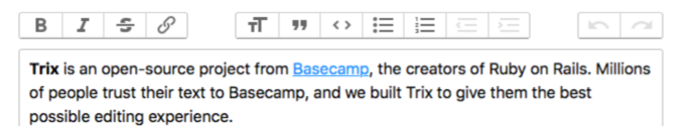

Create and test a Grails 5 TagLib; integrate the Trix WYSWYG editor
Learn how to integrate Trix (the rich text editor created by Basecamp) with your Grails app with the help of a custom TagLib
Authors: Sergio del Amo
Grails Version: 3
1 Grails Training
2 Getting Started
In this guide you are going to integrate a third party WYSWYG editor into your Grails 3 application with the help of a TagLib.
2.1 What you will need
2.2 How to complete the guide
3 Writing the Application
3.1 Domain Class
Create a persistent entity to store Announcement entities. Most common way to handle persistence in Grails is the use of Grails Domain Classes:
./grailsw create-domain-class Announcement
| Created grails-app/domain/demo/Announcement.groovy
| Created src/test/groovy/demo/AnnouncementSpec.groovlink:../snippets/grails-app/domain/demo/Announcement.groovy[role=include]3.2 Scaffolding
Generate static scaffolding (Controller and Views) for the Domain class you created in the previous section.
./grailsw generate-all Announcement
| Created grails-app/domain/demo/Announcement.groovy
| Created src/test/groovy/demo/AnnouncementSpec.groov3.3 Downloading Trix
Trix Editor is an open-source rich text editor project developed by Basecamp.
Compose beautifully formatted text in your web application. Trix is an editor for writing messages, comments, articles, and lists—the simple documents most web apps are made of. It features a sophisticated document model, support for embedded attachments, and outputs terse and consistent HTML.

To integrate into a Grails application:
-
Download the latest stable release. For this guide, we use version 0.10.0
-
Copy trix.js to assets/javascripts/trix.js
-
Copy trix.css to assets/javascripts/trix.css
-
Reference js and css files with Asset Pipeline Plugin
The Asset-Pipeline is a plugin used for managing and processing static assets in JVM applications primarily via Gradle (however not mandatory). Asset-Pipeline functions include processing and minification of both CSS and JavaScript files
Include the js file with Asset pipeline:
link:../snippets/grails-app/assets/javascripts/application.js[role=include]Include the css file with Asset pipeline:
link:../snippets/grails-app/assets/stylesheets/application.css[role=include]3.4 Writing the Taglib
./grailsw create-taglib TrixThe TagLib integrates Trix with forms as described in their documentation:
link:../snippets/grails-app/taglib/demo/TrixTagLib.groovy[role=include]| 1 | We use a custom name space; trix |
| 2 | By default we encode as Text but the value, if present, is encoded as Html |
And we test the TagLib:
link:../snippets/src/test/groovy/demo/TrixTagLibSpec.groovy[role=include]| 1 | applyTemplate gets as an argument anything that would be valid in a GSP. That code gets evaluated as if it were in a GSP and what’s get returned is the result of evaluating that. |
| 2 | Because this test is annotated with @TestFor(TrixTagLib) the compiler will add a property called tagLib. You can interact with that tagLib property and invoke editor tag as it were a method.
You could pass a map which will be passed to the args or a closure as the last method parameter which will be used as the body of the tag. |
3.5 Use the Taglib
Use Trix in create and edit GSPs. Those were generated with the static scaffolding generate-all command.
Replace:
<f:all bean="announcement"/>with:
link:../snippets/grails-app/views/announcement/create.gsp[role=include]link:../snippets/grails-app/views/announcement/edit.gsp[role=include]